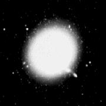

|  |
At least, that is the best I had done until recently. I took Harvey to Henry Coe State Park, near Morgan Hill, California, on Friday 28 April and again on Saturday 29 April, mostly for the kind of faint galaxy hunting that I don't write about for fear of boring you. Friday was chilly, windy, and dewy, and the seeing was visibly ratty even at only 98x. Yet Saturday was different, and not just because it was warmer, less breezy, and not so damp. As I chased lumpy nothings through Hydra and Crater, I kept hearing passing observers remark how good the seeing was - sub arc-second in a Celestron 8. As I grew more and more tired, the intellectual effort of star-hopping became too much for me, so I decided to abandon my planned program and see what M87 had to offer.
Perhaps as an omen, I had unusually good luck finding it to begin with: Usually I enter the central part of the Virgo galaxy cluster by starting at rho Virginis, scanning north to M60 or M59, then working across to the west, but on this night I pointed the finder in vaguely the right direction, took a guess about which star M87 was next to, looked through the main telescope, and there it was. At 98x, there was no detail visible in the main galaxy, though its near neighbors NGC 4476, 4478, 4486A, and 4486B were all visible. So I changed to 326x - a 12 mm Brandon - for a better look. The seeing was indeed pretty good, and after a few minutes, I casually asked the few die-hards who were still awake and observing to come and tell me how the view appeared to them. I didn't tell anyone what we were looking at 'til all the results were in.
We all saw the thin ray emanating toward the northwest, and also another area of increased brightness just east of the nucleus, not as far out as the tip of the ray. I increased magnification to 489x (8 mm Brandon): The seeing was up to it, and the visibility of the features improved. To my eye, the jet was slightly detached from the nucleus -it did not go all the way in - the length (scaling against the eyepiece field diameter) was right, and the outer tip of the jet gave a hint of being slightly bent or kinked. The view was good enough, that I would venture that the jet would have been visible in a substantially smaller telescope, perhaps in a 10-inch. Fellow observer Dave North went so far as to say that the jet was easy in Harvey at these magnifications. I am sure that my previous inability to detect it stemmed from the much worse seeing that obtained when I tried, and the observation served as a great reminder that deep-sky work with large amateur telescopes is often seeing-limited. And I don't know what the enhanced brightness at (approximately) position angle 90 degrees was - all the images of M87 that I have been able to find are either so deeply exposed they burn in the entire core, or so lightly exposed as to show the jet and little else. I don't think the whatever at 90 degrees was as bright as the jet.
I rather regretted not having a list of deep-sky targets that might reveal special detail in good seeing tucked away somewhere, but I did think of a few other things to try. M13 was wonderful at 489x -resolved all the way across the core. "You always wondered what was on the other side," said one observer, speaking of our seeming ability to see clear through the globular. A bit to my surprise, the three dark lanes of the "propeller" were easily visible; I am used to thinking of them as best seen in smaller telescopes, but this particular combination of aperture and magnification seemed to be just right for viewing them. Perhaps M13 should be called the Mercedes cluster, for the lanes indeed resemble the Mercedes star.
M57 was next on my list, and it too was a lovely view. At 489x, the central star kept popping in and out - it was not as good a view as I have had of the central star with Harvey, on previous occasions, later in the summer with even better seeing, but it was certainly there. So were several other stars, blinking in and out at the limit of vision, both within the glowing portion of the ring itself and in the darker "hole in the doughnut". Perhaps doughnut is not quite the right word; one observer said that although M57 resembled a Cheerio with smaller aperture and magnification, the view through Harvey looked like a peach cut in half. I could see patches of faint nebulosity even in the "hole", and the entire ring presented an irregularly curdled or mottled appearance, with lots of structure large enough to be easily resolved, but low enough in contrast to be only on the edge of visibility.
Another observer directed my attention to a possible color variation in the nebulosity; to him, the outer periphery of the ring appeared ruddy, whereas most of the body of the ring was green. On inspection, I think I agreed, though the difference was very subtle.
I took a look at a few double stars, to get a more conventional idea of what the seeing was like. Nu Scorpii was well resolved into four stars, with large amounts of dark space between the two components of each of its pairs. The airy discs of the stars were visible, but the diffraction rings were washed out into a blur of light around the central discs. There was no hint of linear distortions, such as might have deceived us into thinking we had detected the M87 jet when we actually had not. Nu Scorpii was lower in the sky than any of the other objects I have mentioned; seeing may have been better higher up. Antares, lower still, was a relatively easy split, even though its bright primary was trailed into a short, blocky spectrum by atmospheric dispersion.
I didn't get to sleep 'til almost dawn. It had been quite a night.